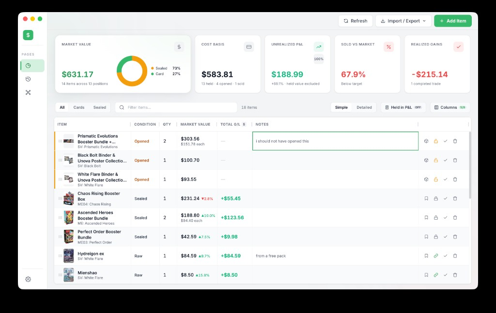
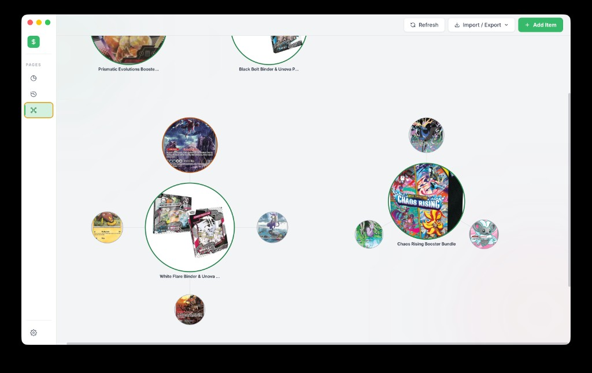

Desktop app · macOS & Windows
The stock tracker for your Pokémon portfolio
TCBudget treats your cards like positions in a brokerage account — cost basis, market value, and realized and unrealized P&L in one view. Your data stays local on your machine.
Installers are published on GitHub Releases for each version tag.

New · Pull Map
A unique way to look at your portfolio
Pull Map visualizes your collection as an interactive graph — a different lens on the same portfolio you're already tracking.

Built for serious collectors
TCBudget is a way to track your Pokémon portfolio the same way you'd track stocks — what you own, what you paid, and how it's performing over time.
Pull Map offers a unique way to look at that same portfolio — your collection as an interactive graph instead of a spreadsheet.